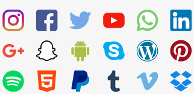
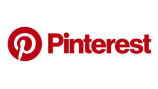
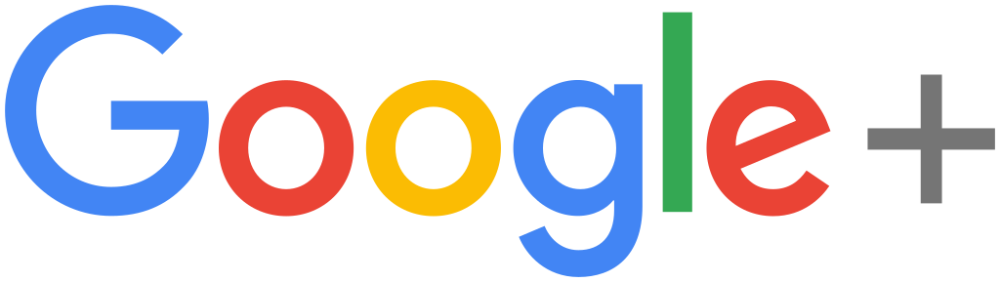
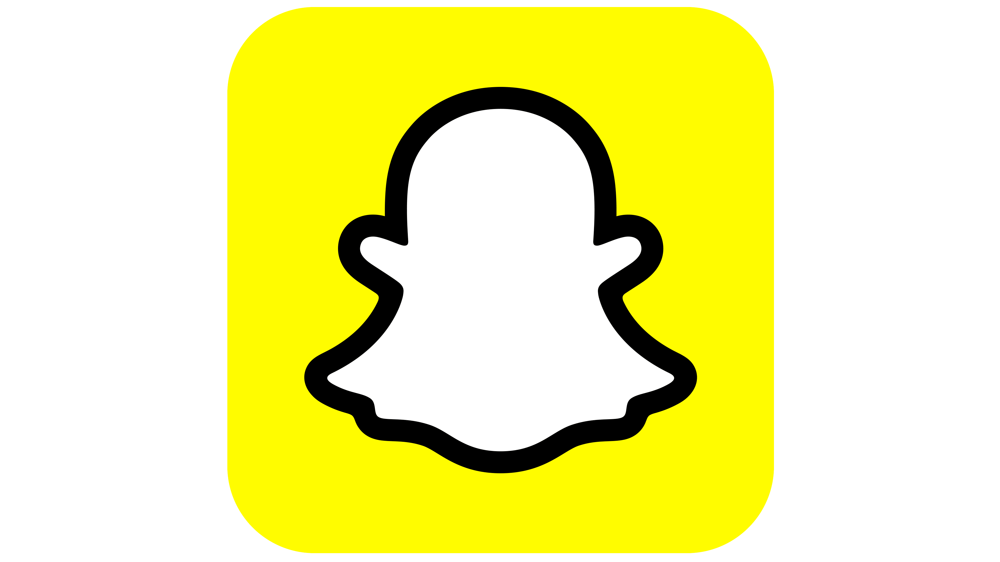
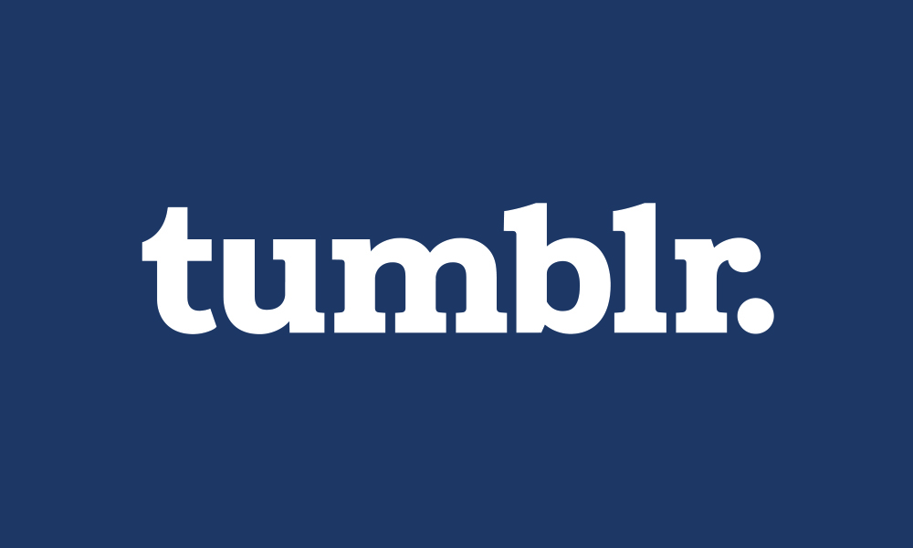
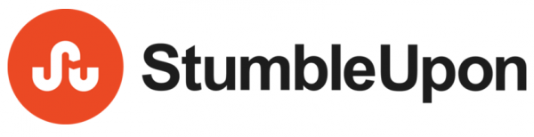

Social media is a great way for marketers in any industry to reach new customers. But as the number of social networks continues to grow, it can be difficult to select the right ones for your business.Although your first thought may be to use them all, some platforms are better suited for marketers than others. And ;depending on your business’s target audience, you need to be sure that you’re using the same ones as they are.

1.FACEBOOK
Daily active users: 1.45 billion
Monthly active users: 2.20 billion
Best use: Engaging your audience, Collecting reviews, Customer service, Advertising
Facebook is often the first site to come to mind when discussing social media, and for good reason. It’s one of the most widely-used platforms in the world, and it was one of the first to provide advertising options to businesses.
A Facebook business page is a must for any company or brand, and you should update yours on a regular basis. Today’s consumers expect all businesses to have a presence on the platform, and many of them also expect those businesses to respond to their questions and concerns.
Basically, if you’re only going to choose one platform for your business to use, make it Facebook.

2. Twitter
Monthly active users: 320 million
Best use: Building industry authority, Real-Life updates
Twitter is a fast-paced platform, and many users seek news and information on it. Because of this, it can be especially beneficial for companies who publish original content on a regular basis.
Sharing links to new pages and blog posts is simple, and doing it regularly sends readers directly to your new content. Plus, if you make it part of your strategy to share useful and informative content from other sources, you can build your reputation as an authority in your industry.

3. LinkedIn
Registered users: 562 million
Best use: Reaching B2B prospects and potential employees
LinkedIn is a social network for professionals, meaning it can be a useful tool for reaching B2B prospects. However, that doesn’t mean it isn’t useful for B2C companies as well.
If your company is hiring, maintaining an active LinkedIn account can help potential applicants learn about your job openings. And if you share updates about your company and employees, you can show them what it’s like to work at your business.

4. YouTube
Registered users: Over 1 billion
Best use: Highlighting company culture, Tutorials, Demonstrations
Although you may not think of it as social media, YouTube is one of the largest sources of user-generated content online. And if your company creates its own content, it can be a great way to connect with those users.
In addition to the views you get directly on the platform, you can also use YouTube to host videos to embed on your site. And considering how effective visual content is in engaging site visitors, this alone is reason enough to create an account.

5. Pinterest
Monthly users: Over 175 million
Best use: Sharing products
If you run an ecommerce business, you should be on Pinterest—it’s as simple as that. In fact, 87% of pinners have purchased a product because of Pinterest. The platform allows you to upload individual photos (like product photos) with short descriptions (like product information) and a link (like to a product page). Not to mention its built-in shopping feature makes it easier than ever for businesses to promote their products on the network.
You can also use rich pins to provide more context to a product, recipe, article, and app pins, and use their advertising options to reach more users. It’s an easy way to drive traffic directly to your product pages and connect with potential customers.

6. Instagram
Monthly active users: Over 400 million
Best use: Building your brand
Instagram is built around sharing photos and is great for any visual content. It isn’t a text-heavy platform, though, and also doesn’t allow links within posts.
That being said, the platform is a valuable tool for building your brand’s identity. If you’re a B2C company, you can use it to share photos of your products in use and encourage your followers to do the same for user-generated content you can then re-post as part of your feed. If you’re a B2B company, you can use it to share behind-the-scenes photos of your company and office.
The use of hashtags on Instagram are a way to reach a multitude of people, and taking advantage of the ever-popular Instagram stories or Instagram Live video feature is a great way to expand your social presence.
The platform also offers advertising options for businesses, which can be accessed through Facebook. If you’re familiar with Facebook’s ad management system, it could be an easy transition to start running sponsored posts.

7. Google+
Monthly active users: 395 million
Best use: Managing your Google My Business listing
Although Google+ was designed to be a social media platform, it never attracted as many active users as its competitors. That being said, it’s still important to claim your account with Google My Business.
This is the only way to ensure that your business shows up on Google Maps with accurate information. If you’re a local business, this is extremely important for reaching new customers.

8. Snapchat
Daily active users: 187 million
Best use: Real-Time updates, Promoting events
Snapchat allows users to post photos or videos that will remain published for 24 hours before disappearing. This is ideal for businesses looking to promote a timely event, such as a product launch or conference.
Snapchat also offers marketers the ability to create custom, branded geotags to promote certain events in certain locations during a certain time period.
The Snapchat audience does skew younger, making it ideal if your target audience is a college student.

9. Tumblr
Registered users: 412.8 million
Best use: Reaching a young audience
Tumblr is technically a microblogging platform and not a social media site, but it’s still a valuable tool for reaching users between the ages of 16 and 34. It has the youngest demographic of any social site, and its users are very active.
That being said, marketing on Tumblr can be a challenge if you’re not familiar with the platform. It has a distinct “community” with lots of running jokes and memes, so you should spend some time getting used to it before using it to market.

10. StumbleUpon
Registered users: 25 million
Best use: Increasing site traffic
Unlike most social platforms, which focus on user interaction with one another, StumbleUpon simply sends users to interesting pages and sites based on a user’s interests. This means that it won’t help you engage with your audience, but it could be a good source of traffic for certain pages.
If you create original infographics, videos, or research pieces, you can submit the content to StumbleUpon to attract an audience. And if you want to attract a lot of visitors for a certain page, their Paid Discovery tool is an affordable option.
